Contents
SSIT/Examples/example_8_LoadingandFittingData_DataLoading
%%%%%%%%%%%%%%%%%%%%%%%%%%%%%%%%%%%%%%%%%%%%%%%%%%%%%%%%%%%%%%%%%%%%%%%%%%%
Section 2.3: Loading and fitting Hog1-MAPK pathway STL1 yeast data
* Data loading and handling
%%%%%%%%%%%%%%%%%%%%%%%%%%%%%%%%%%%%%%%%%%%%%%%%%%%%%%%%%%%%%%%%%%%%%%%%%%%
Preliminaries
Use the STL1 model from example_1_CreateSSITModels and example_4_SolveSSITModels_FSP clear close all
% example_1_CreateSSITModels % example_4_SolveSSITModels_FSP
Load pre-computed FSP solutions:
load('example_4_SolveSSITModels_FSP.mat')
% View model summaries: Model_FSP.summarizeModel STL1_FSP.summarizeModel STL1_4state_FSP.summarizeModel %%%%%%%%%%%%%%%%%%%%%%%%%%%%%%%%%%%%%%%%%%%%%%%%%%%%%%%%%%%%%%%%%%%%%%%%%%%
Species:
offGene; IC = 1; discrete stochastic
onGene; IC = 0; discrete stochastic
mRNA; IC = 0; discrete stochastic
Reactions:
Reaction 1:
s1: 1*offGene --> 1*onGene
w1: kon * offGene
Reaction 2:
s2: 1*onGene --> 1*offGene
w2: koff * onGene
Reaction 3:
s3: NULL --> 1*mRNA
w3: kr * onGene
Reaction 4:
s4: 1*mRNA --> NULL
w4: dr * mRNA
Model Parameters:
{'kon' } {[2.0000e-01]}
{'koff'} {[2.0000e-01]}
{'kr' } {[ 10]}
{'dr' } {[ 5]}
Species:
offGene; IC = 1; discrete stochastic
onGene; IC = 0; discrete stochastic
mRNA; IC = 0; discrete stochastic
Reactions:
Reaction 1:
s1: 1*offGene --> 1*onGene
w1: kon * offGene
Reaction 2:
s2: 1*onGene --> 1*offGene
w2: onGene*koff/(1+Hog1)
Reaction 3:
s3: NULL --> 1*mRNA
w3: kr * onGene
Reaction 4:
s4: 1*mRNA --> NULL
w4: dr * mRNA
Input Signals:
Hog1(t) = (a0+a1*exp(-r1*t)*(1-exp(-r2*t))*(t>0))
Model Parameters:
{'kon' } {[2.0000e-01]}
{'koff'} {[2.0000e-01]}
{'kr' } {[ 10]}
{'dr' } {[ 5]}
{'a0' } {[ 5]}
{'a1' } {[ 10]}
{'r1' } {[4.0000e-03]}
{'r2' } {[1.0000e-02]}
Species:
g1; IC = 1; discrete stochastic
g2; IC = 0; discrete stochastic
g3; IC = 0; discrete stochastic
g4; IC = 0; discrete stochastic
mRNA; IC = 0; discrete stochastic
Reactions:
Reaction 1:
s1: 1*g1 --> 1*g2
w1: k12*g1
Reaction 2:
s2: 1*g2 --> 1*g1
w2: (max(0,k21o*(1-k21i*Hog1)))*g2
Reaction 3:
s3: 1*g2 --> 1*g3
w3: k23*g2
Reaction 4:
s4: 1*g3 --> 1*g2
w4: k32*g3
Reaction 5:
s5: 1*g3 --> 1*g4
w5: k34*g3
Reaction 6:
s6: 1*g4 --> 1*g3
w6: k43*g4
Reaction 7:
s7: NULL --> 1*mRNA
w7: kr1*g1
Reaction 8:
s8: NULL --> 1*mRNA
w8: kr2*g2
Reaction 9:
s9: NULL --> 1*mRNA
w9: kr3*g3
Reaction 10:
s10: NULL --> 1*mRNA
w10: kr4*g4
Reaction 11:
s11: 1*mRNA --> NULL
w11: dr*mRNA
Input Signals:
Hog1(t) = A*(((1-(exp(1)^(-r1*(t-t0))))*exp(1)^(-r2*(t-t0)))/(1+((1-(exp(1)^(-r1*(t-t0))))*exp(1)^(-r2*(t-t0)))/M))^n*(t>t0)
Model Parameters:
{'t0' } {[3.1700e+00]}
{'k12' } {[ 78]}
{'k21o'} {[ 192000]}
{'k21i'} {[ 3200]}
{'k23' } {[4.0200e-01]}
{'k34' } {[7.8000e+00]}
{'k32' } {[1.6200e+00]}
{'k43' } {[2.2800e+00]}
{'dr' } {[2.9400e-01]}
{'kr1' } {[4.6800e-02]}
{'kr2' } {[7.2000e-01]}
{'kr3' } {[5.9400e+01]}
{'kr4' } {[3.2400e+00]}
{'r1' } {[4.1400e-03]}
{'r2' } {[4.2600e-01]}
{'A' } {[9.3000e+09]}
{'M' } {[6.4000e-04]}
{'n' } {[3.1000e+00]}
Load Hog1-MAPK pathway STL1 yeast data and filter by experimental
conditions:
%%%%%%%%%%%%%%%%%%%%%%%%%%%%%%%%%%%%%%%%%%%%%%%%%%%%%%%%%%%%%%%%%%%%%%%%%%% % Make a new copies of our models: Model_data = Model_FSP; STL1_data = STL1_FSP; STL1_4state_data = STL1_4state_FSP; % Load the experimental data, matching the species name of the model % ('mRNA') to the appropriate column in the data file % ('RNA_STL1_total_TS3Full') and filter it so that the only data loaded % into the model is from 'Replica' = 1 and 'Condition' = '0.2M_NaCl_Step': Model_data = Model_data.loadData('data/filtered_data_2M_NaCl_Step.csv',... {'mRNA','RNA_STL1_total_TS3Full'},... {'Replica',1;'Condition','0.2M_NaCl_Step'}); STL1_data = STL1_data.loadData('data/filtered_data_2M_NaCl_Step.csv',... {'mRNA','RNA_STL1_total_TS3Full'},... {'Replica',1;'Condition','0.2M_NaCl_Step'}); STL1_4state_data = ... STL1_4state_data.loadData('data/filtered_data_2M_NaCl_Step.csv',... {'mRNA','RNA_STL1_total_TS3Full'},... {'Replica',1;'Condition','0.2M_NaCl_Step'}); % These plots are unnecessary, as the model parameters have not been fit % to the data yet. However, it illustrates the improvement to come later: Model_data.plotFits([],"all",[],{'linewidth',2}, Title='Bursting Gene',... YLabel='Molecule Count',LegendLocation='northeast', LegendFontSize=12); STL1_data.plotFits([], "all", [], {'linewidth',2}, Title='STL1',... YLabel='Molecule Count',LegendLocation='northeast',LegendFontSize=12); STL1_4state_data.plotFits([], "all", [], {'linewidth',2},... Title='4-state STL1', YLabel='Molecule Count',... LegendLocation='northeast', LegendFontSize=12);
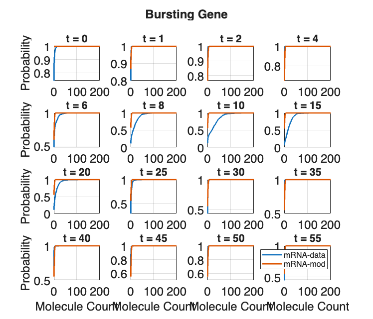
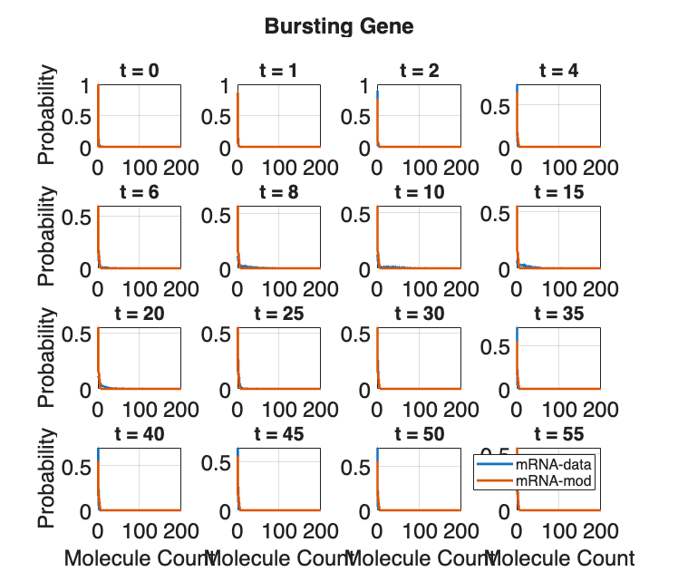
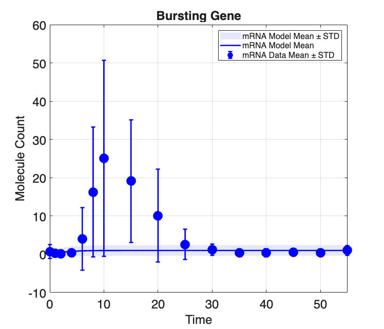
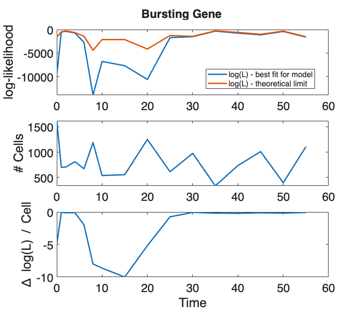
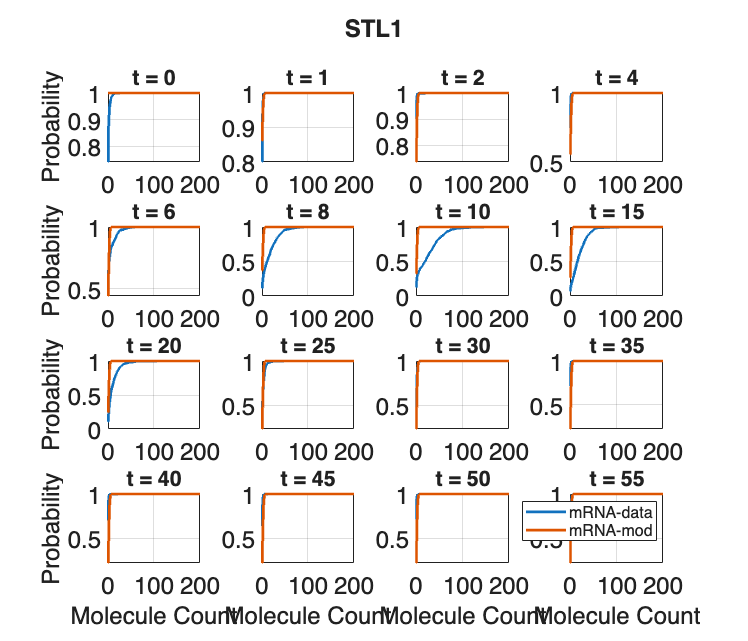
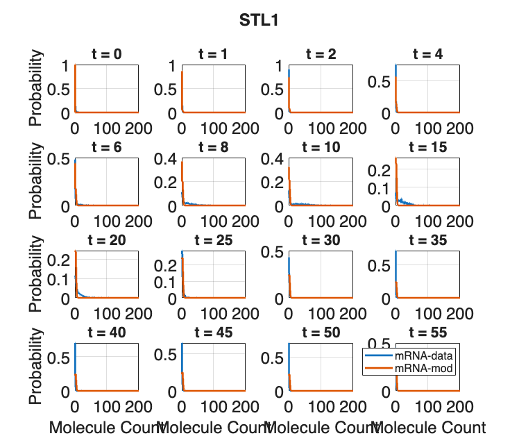
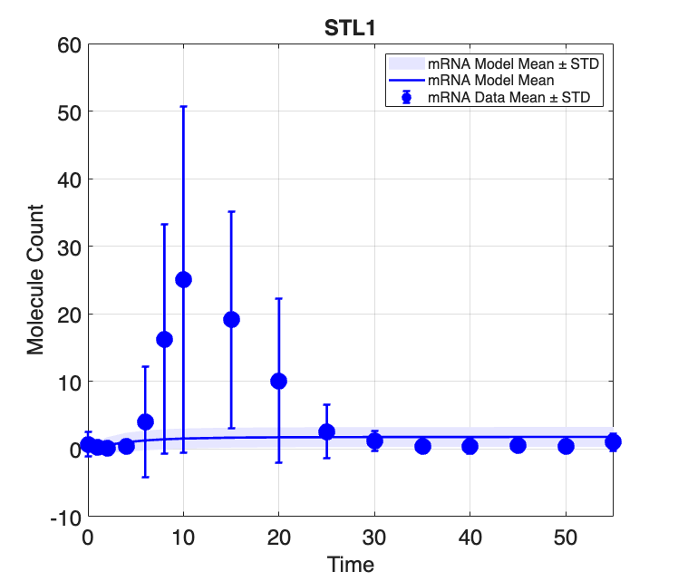
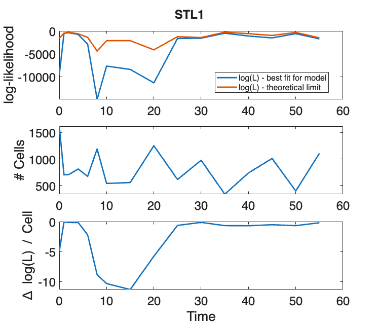
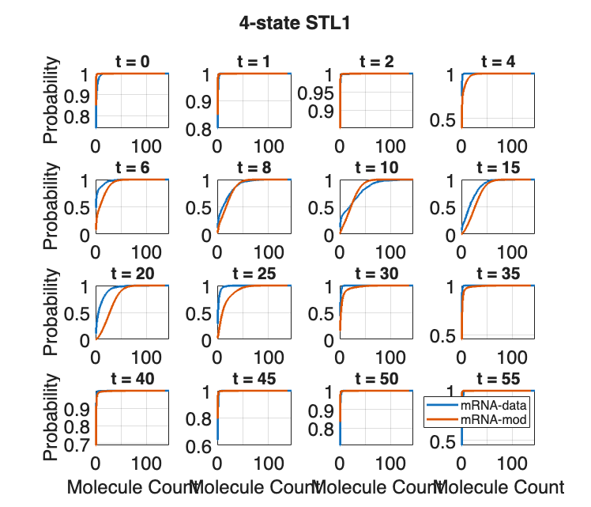
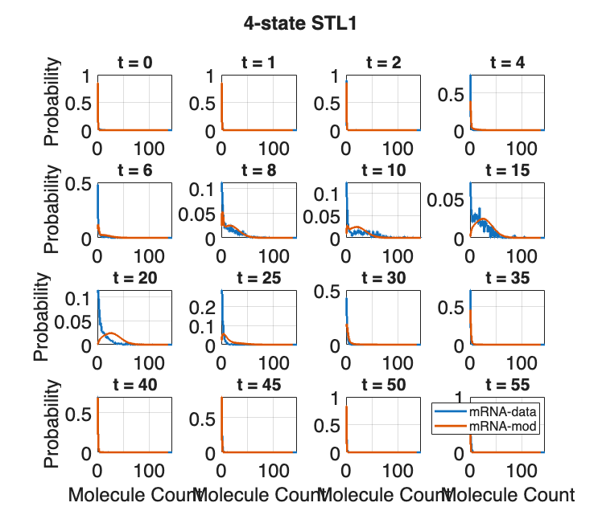
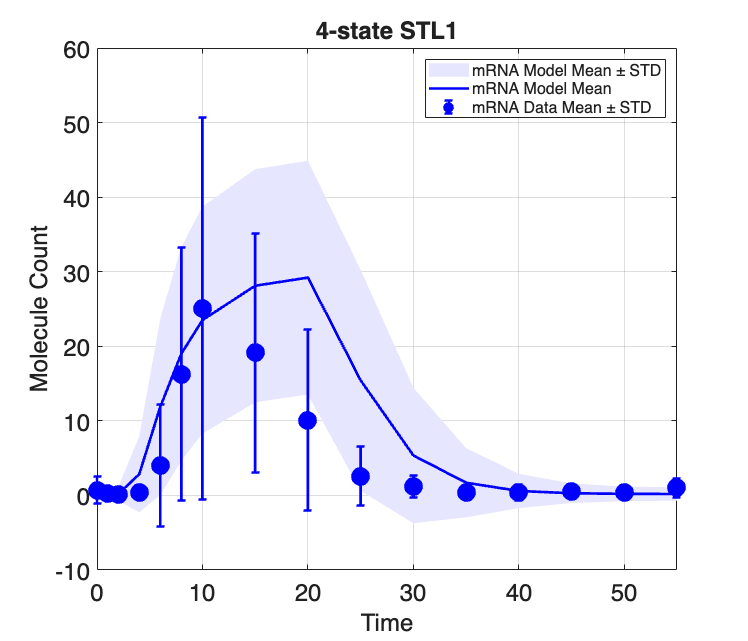
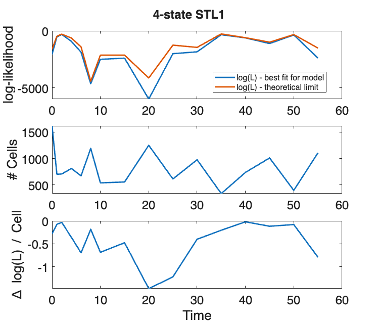
Save models with loaded data
saveNames = unique({
'Model_data'
'STL1_data'
'STL1_4state_data'
});
save('example_8_LoadingandFittingData_DataLoading',saveNames{:})